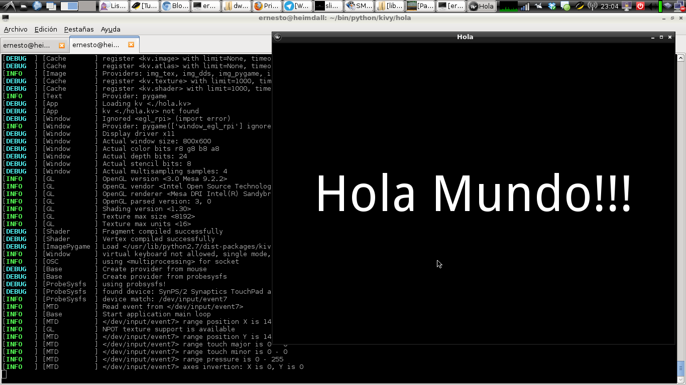
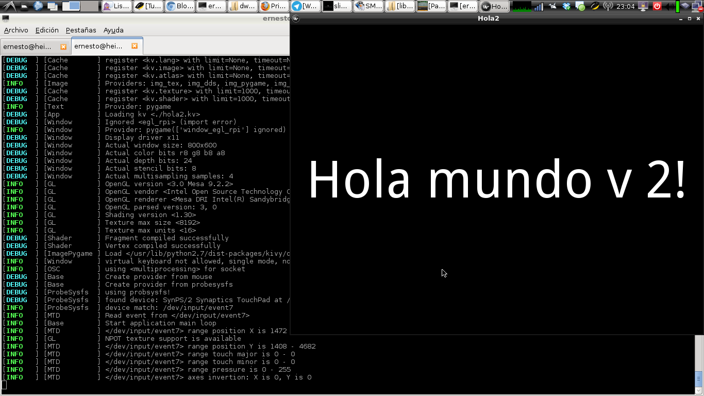

Desarrollo de aplicaciones multiplataforma con python y kivy
Posted on vie 18 abril 2014 in Tutorial Python • 3 min read
Kivy es una librería que permite usar python para crear aplicaciones para el escritorio y dispositivos móviles con soporte multitouch.
Es multiplataforma:
Soporta:
- Linux (Debian, Ubuntu, Fedora, ArchLinux, etc).
- Raspberry Pi
- IOS de Apple
- OSX de Apple
- Windows
- Android
Para descargarlo pueden visitar la página del proyecto.
En el caso de Debian en la versión estable (wheezy) toca instalarlo vía pip o bajar la fuente del enlace anterior.
pip install kivy (aplica para cualquier versión de Debian o distro basada en Debian).
Para el caso de la versión de pruebas (Jessie) ya viene en los repositorios de Debian:
apt-get install python-kivy python3-kivy python-kivy-examples
Para más información del proyecto pueden visitar su wiki en github.
El ejemplo que se explicará es el de una ventana con una etiqueta que diga "Hola Mundo!", la primera versión contendrá todo el código en un script en python y la siguiente versión se separa el script python de las características de los widgets.
Código del hola mundo versión 1:
#!/usr/bin/env python
#Se importa kivy
import kivy
#Se válida que se esté usando la versión 1.8.0 de kivy
kivy.require('1.8.0')
#Se importa la clase App y el widget Label
from kivy.app import App
from kivy.uix.label import Label
#Se crea la clase HolaApp que hereda de App
class HolaApp(App):
#Se crea la función build
def build(self):
#Se retorna el widget Label con un texto y el tamaño del mismo
return Label(text='Hola Mundo!!!',
font_size=100)
if __name__ == "__main__":
#Se instancia la clase y se ejecuta
HolaApp().run()
El script se llamará hola.py.
A continuación se muestra la figura del resultado de la ejecución del script:

La versión 2 del hola mundo se diferencia del primero por que ahora se manejará dos archivos, hola2.py y hola2.kv, su nombre tiene relación con el nombre de la clase que se crea y es la forma como python y kivy reconocen los archivos que necesitan ejecutar.
A continuación el código de hola2.py:
#!/usr/bin/env python
#Se imposta kivy
import kivy
#Se valida que se use la versión 1.8.0 de kivy
kivy.require('1.8.0')
#Se importa la case App y el widget Label
from kivy.app import App
from kivy.uix.label import Label
#Se crea la Clase Hola2App que hereda de App
class Hola2App(App):
#Se define la función build que retorna el widget Label
#Esta vez sin ningún argumento ya que será manejado por el archivo hola2.kv
def build(self):
return Label()
if __name__ == "__main__":
#Se instancia la clase Hola2App y se ejecuta.
Hola2App().run()
Código del archivo hola2.kv:
# File name: hola2.kv
#:kivy 1.8.0
<Label>:
text: 'Hola mundo v 2!'
font_size:100
Este archivo tiene la descripción de la etiqueta, con el parámetro text y font_size, esto facilita tener ordenada y cambiar los parámetros de los widgets sin tener que modificar código.
El resultado de la ejecución del script hola2.py se muestra en la siguiente figura:

En siguientes artículos se seguirá explicando el uso de los widgets y como instalar la librería en Android y crear aplicaciones para Android.
¡Haz tu donativo! Si te gustó el artículo puedes realizar un donativo con Bitcoin (BTC) usando la billetera digital de tu preferencia a la siguiente dirección: 17MtNybhdkA9GV3UNS6BTwPcuhjXoPrSzV
O Escaneando el código QR desde la billetera: